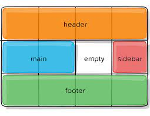

Ventajas de CSS Grid:
Mucha más flexibilidad: te permite controlar los elementos en las 2 dimensiones y con total libertad.
Menos código y menos bugs: se reduce considerablemente el código empleado, lo que conlleva revisiones más sencillas y menor probabilidad de bugs.
Optimización de recursos: al ser código más simple y consistente se economiza tanto en tiempo como en recursos necesarios para mostrar la página.
Responsive más sencillo: permite crear elementos dinámicos que se adaptan a diferentes tamaños o resoluciones sin complicaciones.
¿Por qué se usa CSS grid layout?
El internet móvil presenta un gran número de desafíos para los diseñadores de páginas web: debido a la enorme variedad de diseños de los dispositivos móviles, es imposible saber qué formato tiene la pantalla en la que se visualizará el contenido web. Por esto, es esencial que los elementos individuales (cajas de texto, gráficos, elementos interactivos) se distribuyan de forma independiente y al mismo tiempo de forma clara, teniendo en mente las respectivas condiciones de espacio dadas por cada pantalla. Hace un tiempo se trabajaba con los llamados floats, pero es una técnica compleja que daba lugar a muchos errores. Hoy los diseñadores cuentan con dos métodos para implementar un diseño dinámico: además de CSS grid, también se puede usar Flexbox. Sin embargo, las dos técnicas difieren en algunos aspectos. Flexbox es unidimensional. Esto quiere decir que los elementos solo se pueden mover a lo largo de un eje. En cambio, un diseño CSS grid ofrece al diseñador web dos dimensiones para la colocación de los objetos porque, en lugar de solo un eje, permite crear una rejilla con filas y columnas.
dinahosting, CSS GRID: VENTAJAS Y PRIMEROS PASOS. desde https://dinahosting.com/blog/css-grid-ventajas-y-primeros-pasos/